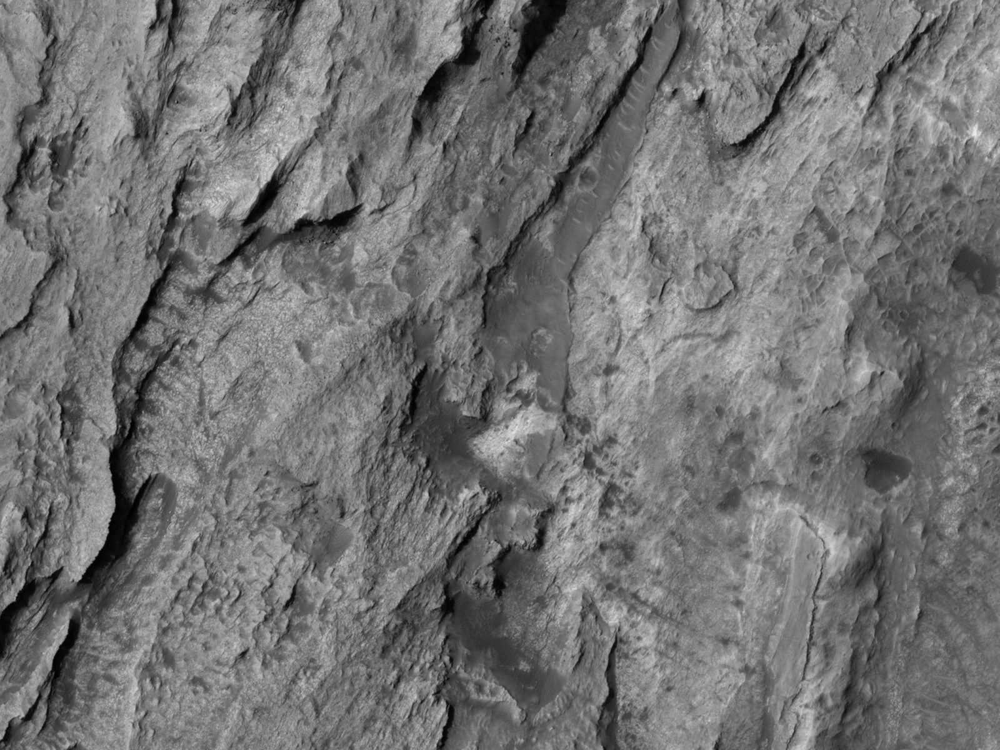

Map

Layer not available yet
MRO HiRISE Curiosity roving-site mosaic. NASA/JPL Mars Trek.
Focus the map, move with the arrow keys, and press Enter to place a point.
Conceptual route for a hackathon prototype—not a verified safe route.

Layer not available yet
MRO HiRISE Curiosity roving-site mosaic. NASA/JPL Mars Trek.
Focus the map, move with the arrow keys, and press Enter to place a point.